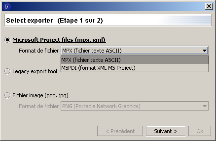

Importation/Exportation
ATTENTION : Les fonctionnalité d'importation et d'exportation sont actuellement
remaniées. Les informations ci-dessous sont sujettes à changements dans les prochaines versions de
GanttProject.
Importation
GanttProject vous permet d'importer des projets provenant de :
- GanttProject ;
- Microsoft® Office Project.
Vous pouvez également importer des listes des tâches provenant de fichier texte (ASCII).
Importation d'un projet de GanttProject
- cliquez sur le menu Fichier, puis Importer ou cliquez sur le bouton Importer
 ;
;
- choisissez l'importeur GanttProject et validez ;
- sélectionnez le fichier GanttProject que vous voulez importer ;
- lors de l'importation, vous pouvez choisir d'ajouter les tâches au projet existant ou de supprimer le
projet existant.
Importation d'un projet de Microsoft® Office Project
- cliquez sur le menu Fichier, puis Importer ou cliquez sur le bouton Importer
;
- choisissez l'importeur Microsoft® Office Project et validez ;
- sélectionnez le fichier Microsoft® Office Project que vous voulez importer (GanttProject
sait importer les fichiers MPX (Microsoft Project Exchange), MPP (Microsoft Project) et
MSPDI (Microsoft Project Data Interchange) ;
- lors de l'importation, vous pouvez choisir d'ajouter les tâches au projet existant ou de supprimer le
projet existant.
Importation d'une liste de tâches provenant d'un fichier texte
Le formalisme des fichiers textes est extrêmement simple : une ligne correspond au nom d'une tâche.
Lors de la lecture du fichier, GanttProject va donc créer une tâche par ligne du fichier, le nom de la
tâche créée sera exactement celle de la ligne lue.
- cliquez sur le menu Fichier, puis Importer ou cliquez sur le bouton Importer
;
- choisissez l'importeur de fichiers texte et validez ;
- sélectionnez le fichier texte contenant les noms des tâches que vous voulez importer ;
- lors de l'importation, vous pouvez choisir d'ajouter les tâches au projet existant ou de supprimer le
projet existant.
Exportation
GanttProject vous permet d'exporter les projets en différent format :
- PDF (Portable Document Format) ;
- HTML (HyperText Markup Language) ;
- PNG (Portable Network Graphics);
- fichiers Microsoft® Office Project.
N.B. : les exportations sont en train d'être pluginisées, l'accès à ces fonctionnalités
n'est pas stable, c'est pourquoi certaines sections suivantes sont vides pour l'instant.
Exportation PDF
En cours de modification...
Exportation HTML
En cours de modification...
Exportation PNG
En cours de modification...
Exportation en fichiers Microsoft® Office Project
Cette fonctionnalité n'est disponible que si la version de GanttProject dont
vous disposez contient le plugin d'exportation et d'importation MS-Project.
- cliquez sur le menu Fichier, puis Exporter ou cliquez sur le bouton Exporter
 ;
;
- la fenêtre de choix d'exportation s'affiche ;
- choisissez le format d'exportation, MPX ou MSPDI et validez;
- choisissez l'endroit où le fichier sera exporté et validez.

N.B.
- le format MPX se lit avec toutes les versions de Microsoft® Project et écrit par toute les versions jusqu'à Microsoft Project 98 ;
- le format MSPDI est le format XML de Microsoft® pour stocker des données de projet. Microsoft® Office Project 2002 et Microsoft® Office Project 2003 peuvent lire et écrire des fichiers MSPDI.